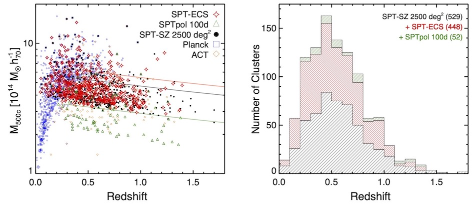
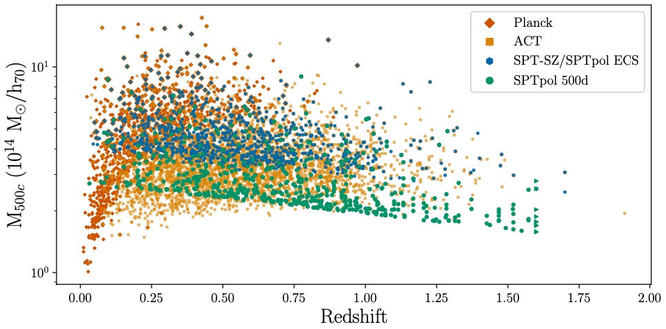
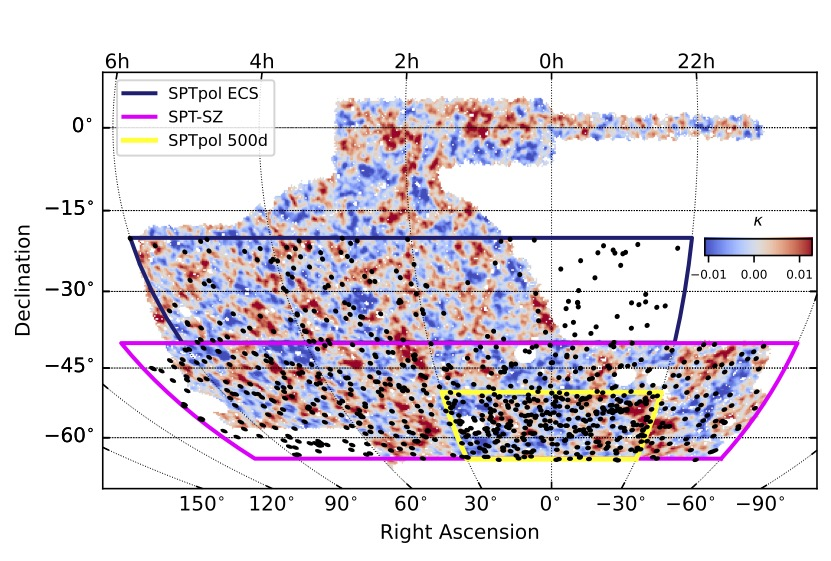
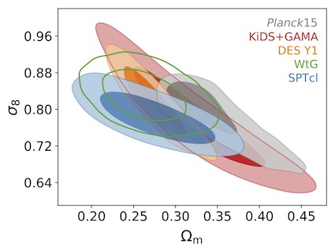
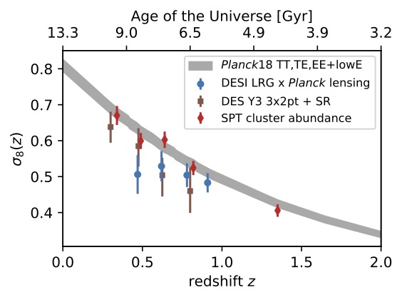
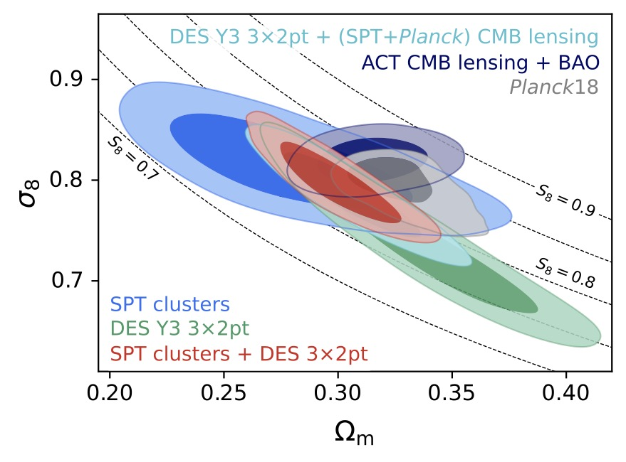
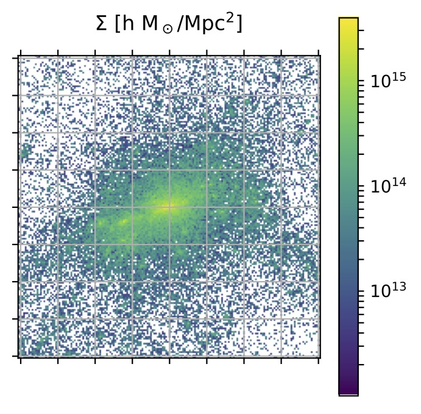

Research
Astrophysics and Cosmology
Survey Science Cosmology
I am actively involved in cosmological surveys that explore the sky and our
universe at different wavelengths: the South Pole Telescope (SPT,
millimeter-waves or microwaves) and the Dark Energy Survey (DES, optical).
I am
also involved in the preparation for upcoming surveys such as Euclid and the
Rubin Observatory Legacy Survey of Space and Time (LSST) (both are optical
surveys) and CMB-S4, a next-generation ground-based mm-wave survey.
Some of the key questions I am trying to answer with these survey data are
related to the origin of the observed accelerated late-time expansion of the
universe, the mass of neutrinos, and our ability to provide a coherent
description of all cosmological observations.
Abundance of dark matter halos
The abundance (or number) of dark matter halos (and the galaxy clusters they host) above a given mass and at a given redshift has long been recognized to be extremely sensitive to some cosmological parameters such as the matter density Ωm and the variance in the matter density field σ8. Performing this measurement over a range of redshifts thus also allows to constrain the dark energy equation of state parameter w. Finally, the combination of abundance measurements with measurements of the primary anisotropies in the cosmic microwave background (CMB) radiation allows to constrain the sum of neutrino masses. Plenty of discoveries to go after! However, in practice, all these measurements are limited by our ability to accurately measure the masses of dark matter halos.
Multi-observable cosmology using clusters of galaxies
The key for a successful cosmological analysis using halo abundances is to adopt a multi-observable mass calibration strategy. In the following, I describe such an analysis.
Galaxy cluster selection using the South Pole Telescope survey
The South Pole Telescope detects galaxy clusters through the Sunyaev-Zel'dovich effect: low-energy CMB photons (remember, the CMB is 2.7 K) scatter off the hot gas that is trapped by the halo's gravitational potential. This leads to a small but measurable spectral distortion in the CMB along the line of sight of a cluster. The Sunyaev-Zel'dovich effect is independent of redshift. On the one hand, this means that we need other data to obtain cluster redshifts, but it also means that the Sunyaev-Zel'dovich effect allows us to detect clusters at high redshifts where other means of detection run out of sensitivity.
The mass and redshift distributions of the SPT, Planck, and ACT cluster samples (Bleem, Bocquet et al. 2020).
In 2024, the collaboration released the full catalog of galaxy clusters detected in the first-generation SPT-SZ data and in the second-generation SPTpol dataset. The analyses represent a milestone and prerequisite for the ongoing analysis of SPT-3G data. The mass and redshift distributions of the clusters detected by SPT-SZ and SPTpol, Planck, and ACT (Bleem et al. 2024).
Weak-lensing observations of galaxy clusters
The most accurate approach to measure the mass scale of galaxy clusters is to exploit the effect of gravitational lensing, which is sensitive to the full mass of a halo (and not just its visible galaxies or hot gas). The advent of large optical weak-lensing surveys such as DES make this approach particularly attractive (Bocquet et al. 2024 I). At higher redshifts, targeted observations using the largest ground-based telescopes and the Hubble Space Telescope allow us to cover redshifts up to about 1.1 (e.g., Schrabback, Bocquet et al. 2020).
The outline of the main fields of the SPT cluster surveys. We also show the a mass map based on DES Y3 weak-lensing data, and SPT clusters with z<0.5 for which we can measure DES lensing shear in the overlap region (Bocquet et al. 2024 I).
Cosmological Constraints
Cosmological constraints from different probes, including the abundance of SPT-selected galaxy clusters (SPTcl; Bocquet et al. 2019).
Evolution of structure growth with time (Bocquet et al. 2024 II).
Multiprobe Cosmology from the Abundance of Clusters, Galaxy Clustering, and Weak Lensing
Cosmic shear, galaxy clustering, and the abundance of massive halos each probe the large-scale structure of the universe in complementary ways. I led an analysis that presents cosmological constraints from the joint analysis of the three probes, building on the latest analyses of the lensing-informed abundance of clusters identified by the South Pole Telescope (SPT) and of the auto- and cross-correlation of galaxy position and weak lensing measurements (3×2pt) in the Dark Energy Survey (DES). Constraints from the abundance of SPT- selected clusters with weak-lensing mass calibration (blue; Bocquet et al. 2024b) and from galaxy clustering and weak lensing (green; DES Collaboration 2022), along with the SPT cluster + DES 3×2pt multiprobe analysis (red; Bocquet et al. 2025) and a selection of external cosmological constraints. (Bocquet et al. 2025).
Theoretical modeling using numerical simulations
On large scales, cosmic structure formation can accurately be described by perturbation theory. However, scales smaller than a few megaparsecs evolve non-linearly as matter collapses under its own gravitational pull and forms filaments and dark matter halos. A lot of cosmological information is contained in these non-linear scales. To access these scales from a theoretical modeling perspective, we use numerical cosmological simulations. In these, the matter density field is evolved and allow us to track its evolution well into the non-linear regime.
Cosmic emulation
As discussed, we have to rely on numerical simulations to describe the
non-linear matter density field. Originally, this approach was used to calibrate
a correction of the linear theory. However, this correction may itself depend on
the cosmological parameters we are trying to measure. The solution is emulation:
a suite of cosmological simulations is run for a range of different cosmologies,
and an interpolation technique then allows to make predictions for the quantity
of interest at any new cosmology.
Using the Mira-Titan Universe suite of cosmological simulations, I constructed
an emulator for the halo mass function. The 111 input cosmologies cover 8
cosmological parameters, including the effects of dynamical dark energy and
massive neutrinos. I did not "teach" the emulator anything about the halo mass
function being approximately universal; the emulator is purely data-driven. The
accuracy is at the few-percent level in the cluster mass range at low redshifts
(Bocquet et al. 2020).
Cosmologies of the Mira-Titan Universe (111 black markers) which are used to construct an emulator for the halo mass function (Bocquet et al. 2020).
Halo mass maps
To interpret the weak-lensing measurements discussed above, we need reliable models of the mass distribution within massive halos. We have used numerical simulations to establish such models. Our latest cosmological analysis is indeed based on our halo mass model ( Grandis, Bocquet et al. 2021). Projected mass map of a massive halo in the Magneticum simulation (figure from Grandis, Bocquet et al. 2021).